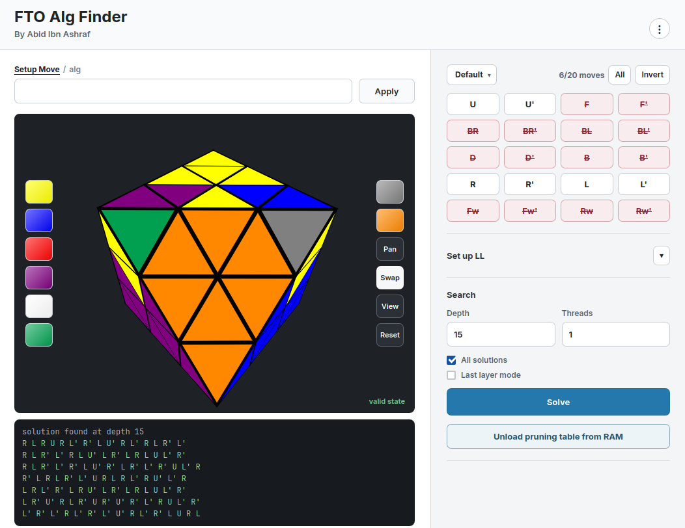
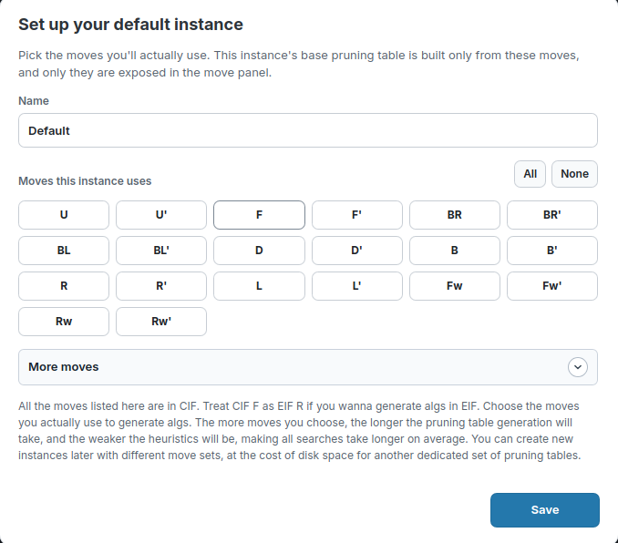
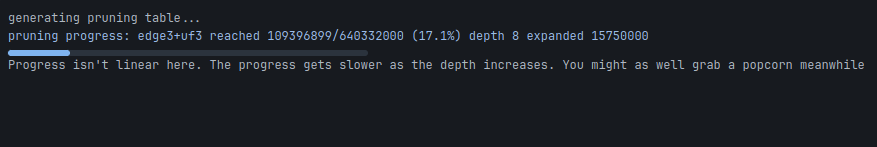

See the state
Set sticker colors manually, swap pieces, or set a piece to be a wildcard. Everything is graphical and from the viewer.
Built by Abid & Matt
Set the state, fix the moveset, and we can solve it.
The app
FTO Alg Finder is a desktop solver to help you gen the ideal FTO algs.
Think Cube Explorer but for FTO: we support graphical input, partial pieces, alg to set state, restricted movesets, last-layer mode, and center disambiguation.
Set sticker colors manually, swap pieces, or set a piece to be a wildcard. Everything is graphical and from the viewer.
Run solves while restricting what moves the solver can use. Specify whether you want solutions at a specific move count, or just the optimal depth.
In LL mode, you can mark a center as belonging in the top layer or otherwise. You can also control which slot a specific center should go to.
demos



prerequisites
Builds

Portable x86_64 build for most Linux distros. No distro package manager required.
Download AppImageSource build: cd main && npm install && npm run tauri build